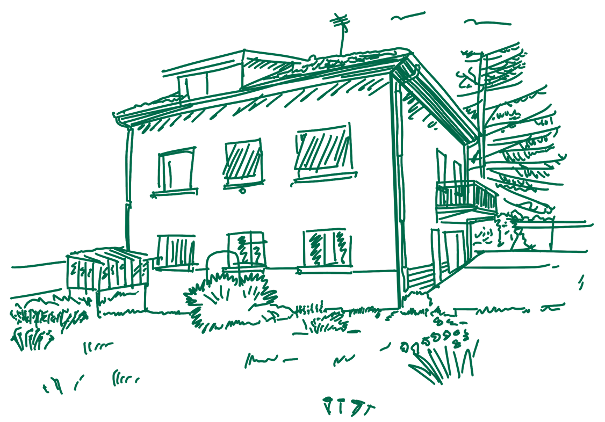
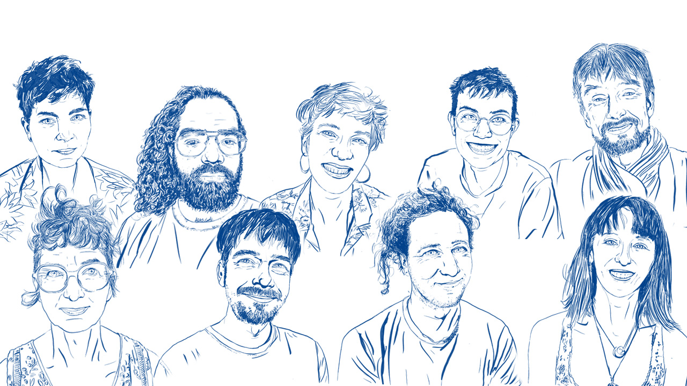

Création d'un lieu
collectif et solidaire

Qui sommes-nous ? Pourquoi ce projet ?
Nous sommes un groupe d'ami·es, d'amoureu·ses, de colocs, de camarades. Ce qui nous lie, c'est le choix de vivre ensemble à Lyon, en cherchant d'autres voies que celles imposées par les modèles classiques.
Face à certaines évolutions qui nous choquent - la flambée des prix immobiliers, l'évacuation de personnes vivant en logements informels, la marchandisation d'espaces publics - nous voulons créer un lieu de solidarité, non-marchand, en complicité avec le vivant.
Nous sommes 9 personnes, adultes et enfants de 3 à 62 ans, rassemblé·es par l'envie de créer un lieu à la fois intime et partagé. Nos parcours sont variés : secteur associatif, recherche universitaire, agroécologie, arts, soin, informatique. Cette diversité est notre richesse.
La solidarité, le partage, l'entraide et la sobriété sont parmi les valeurs fortes qui nous guident.
Nous avons créé pour ce projet une association : Les Recoins, car nous chérissons de construire des coins de vie avec les autres.

Pourquoi acheter ? Pourquoi en association ?
Louer seul·e ou acheter à titre individuel ne nous semble plus soutenable, ni économiquement, ni écologiquement, ni humainement. Nous nous sommes regroupé·es pour qu'une maison à Lyon puisse suivre une voie différente face à la spéculation immobilière.
Grâce à un montage juridique particulier en lien avec la fédération Le CLIP, la propriété associative permettra de pérenniser le lieu. Ce montage sortira la maison du marché immobilier et la rendra accessible à d'autres après nous.
Le lieu : une maison pour habiter, accueillir et partager
Nous avons trouvé notre perle rare : une grande maison de 400m² avec jardin, située dans le quartier Mermoz (Lyon 8e). Elle est parfaitement adaptée à la vie collective et sera le lieu idéal pour donner vie à plein d'envies.
Ce lieu permettra d'imaginer et expérimenter des manières de vivre, de prendre soin et d'habiter la ville différemment. Une alternative à la propriété privée, pensée pour les usagèr·es présent·es et futur·es.
Un projet ouvert sur le quartier
Nous partageons l'envie d'habiter un lieu ancré dans son territoire. Dans cet esprit, nous souhaitons que le lieu devienne un lieu d'entraide et de convivialité entre voisines et voisins, accueillant de façon non lucrative :
• Un atelier d'autoréparation
• Un potager permacole
• Une cantine de quartier
• Des salles de réunion et de stockage pour les collectifs amis
• Des ateliers, résidences, temps de soin, de fête
• Des formes d'hospitalité solidaires et joyeuses
Nous prévoyons également de créer un dortoir au 2e étage pour l'accueil temporaire de collectifs ou de personnes de passage.
Ce dont nous rêvons...
• Voir des enfants grandir dans ce lieu comme dans un village
• Prendre part à une vie qui déborde et l'emporte avec elle
• Que le regard des passant•es puisse s'émerveiller devant un jardin luxuriant et découvrir un intérieur chaleureux, plein des objets malicieux créés par nos artisan•es
• Ouvrir une porte sur une autre manière d'habiter la ville, avec un lieu qui accueille et fait vivre les rêves des autres
• Accueillir les voisins et voisines dans le jardin pour des fêtes de quartier où se rencontrent tous les âges
Notre montage juridique :
"la propriété d'usage"
La propriété d'usage consiste à considérer comme propriétaires les personnes ou groupes qui font l'usage d'un lieu, par exemple en cultivant un champ, en vivant dans une forêt ou en habitant et entretenant une maison.
Dans notre société, le droit impose qu'une personne, physique ou morale, détienne le titre de propriété. Dans notre cas, ce sera une association, Les Recoins. C'est elle qui fera l'acquisition du lieu devant notaire et en restera propriétaire à très long terme. Plus précisément, elle détiendra la propriété patrimoniale du lieu (ou nue-propriété).
L'association usagère, La Passe-Pierre, en détiendra elle la propriété d'usage (ou usufruit).
Pourquoi la propriété d'usage ?
Sur le plan philosophique et politique, la propriété d'usage remet en question du concept de propriété, souvent lié à l'achat, à l'héritage ou au don. Elle s'inspire des réflexions sur les biens communs (l'air, l'eau, le soleil…) qui appartiennent à tout le monde, et invite à considérer que les réponses à nos besoins vitaux (logement, alimentation, santé…) ne devraient pas être soumises aux lois du marché.
Sur le plan pratique, la séparation entre l'association propriétaire et l'association usagère protège le bien immobilier contre toute revente, et donc contre la spéculation immobilière. Cette spéculation qui fait monter les prix de manière disproportionnée et devient source de mal-logement.
Pour garantir que le bien immobilier reste inaliénable, l'association propriétaire, Les Recoins, se compose de deux membres :
La Passe-Pierre (association usagère) et le CLIP.
Le
CLIP est
une fédération de lieux collectifs. Son objectif est de promouvoir et d'accompagner des lieux solidaires, militants, autogérés et en propriété d'usage. Pour garantir la sortie des lieux du marché immobilier, le CLIP devient membre des associations propriétaires et peut à ce titre s'opposer à tout projet de vente.
Les lieux membres du réseau sont tous acquis par une association propriétaire. Ni le CLIP, ni les habitant⋅es ne détiendront un titre de propriété. La gestion et l'entretien du lieu incombent à l'association usagère, qui constitue la propriétaire d'usage du lieu. Le fonctionnement des associations usagères est autogéré et indépendant.
L'association propriétaire compte toujours deux membres : l'association usagère et le CLIP. Toute décision concernant la revente du lieu nécessite l'unanimité de ces deux membres, ce qui permet de "verrouiller" le lieu et d'empêcher toute spéculation immobilière.
Le CLIP aura le rôle de tiers-bloquant au cas où un projet de revente menacerait l'existence du lieu. Ce montage assure que le lieu restera disponible et non spéculatif, bien après nous.
Aujourd'hui, le CLIP rassemble 13 lieux en France. Une de ses inspirations en Allemagne, le Mietshäuser Syndikat, qui existe depuis bien plus longtemps, en compte 192, mais le CLIP n'a pas particulièrement l'envie de grandir autant.
Pour tous les lieux membres du CLIP, le propriétaire patrimonial est une association, ce qui signifie que le capital n'est pas récupérable par les habitants.
Les Recoins
(association propriétaire)
La Passe-Pierre
(association usagère)
Le CLIP
(fédération)
Le financement de l'acquisition immobilière se fait grâce à des dons et à des prêts. Ainsi, les conditions pour habiter dans le lieu sont détachées des conditions commerciales de l'investissement.
Chaque habitant⋅e paie un loyer mensuel qui permet à court ou moyen terme de rembourser les prêts, puis à long terme de financer l'achat d'autres lieux!
Un montage financier sans prêt bancaire
Suivant l'adage "Mieux vaut avoir 1000 ami·es à la rescousse qu'une banque à ses trousses", nous avons choisi d'acheter le bien uniquement à l'aide de dons et prêts individuels ou contractés auprès d'organisations qui partagent nos valeurs.
Le financement de l'acquisition immobilière se fait grâce à des dons et à des prêts. Ainsi, les conditions pour habiter dans le lieu sont détachées des conditions commerciales de l'investissement. Chaque habitant·e paie un loyer mensuel qui permet à court ou moyen terme de rembourser les prêts, puis à long terme de financer l'achat d'autres lieux !
| FONDS NECESSAIRES |
|---|
| Notaire | 41 000€ |
| Premiers travaux | 5 000€ |
| Achat | 560 000€ |
| TOTAL | 606 000€ |
| FINANCEMENT |
|---|
| Apports membres | 309 000€ |
| Prets déjà trouvés | 168 800€ |
| A trouver | 128 200€ |
| TOTAL | 606 000€ |
Nous avons déjà réuni 477 800 € grâce aux apports de membres et aux prêts à particuliers.
Pour finaliser l'achat, il nous manque 128 200€, à réunir d'ici novembre 2025.
C'est pourquoi nous lançons un appel à dons et à prêts privés.
Calendrier du projet :
Novembre 2025 : Signature de l'acte authentique de vente
Début 2026 : Premiers travaux et aménagement du lieu
Courant 2026 : Installation des membres et ouverture progressive
Début 2027 : Remboursement progressif des prêts
Vous voulez prêter aux Recoins?
L'association propriétaire, Les Recoins, vous fournira une reconnaissance de dette, un document précisant le montant du prêt, sa durée et les modalités de remboursement, selon ce qui aura été convenu ensemble.
L'argent est rendu sans intérêts, et la première année, le temps de prendre nos marques et de faire des travaux, est une année de répit sans remboursement.
Ce doit donc être une somme qui n'impacte pas votre quotidien.
Tous les documents nécessaires (reconnaissance de dette, RIB) vous seront transmis par email lors de nos échanges.
Vous voulez faire un don aux Recoins?
Si c'est une petite somme?
Vous pouvez nous faire un apport sans droit de reprise.
Les associations peuvent recevoir de petites sommes non fiscalisées en échange de compensations non-monétaires.
Si c'est plus de 7000€?
Il est possible de défiscaliser la somme versée. N'hésitez pas à nous contacter pour en parler plus en détail.
Vous pouvez aussi nous soutenir en diffusant ce document autour de vous!